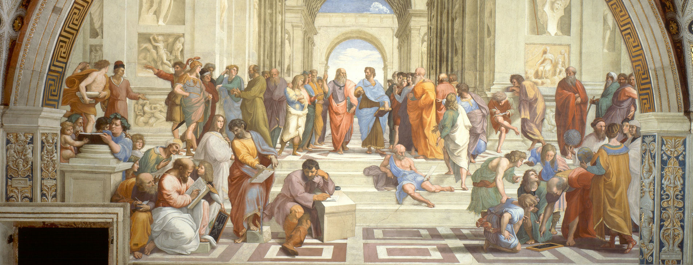
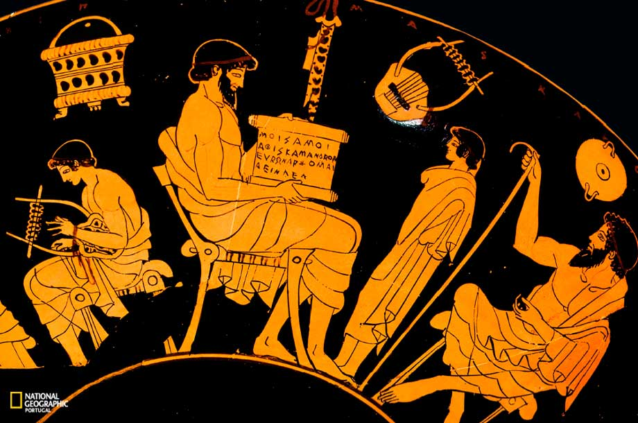
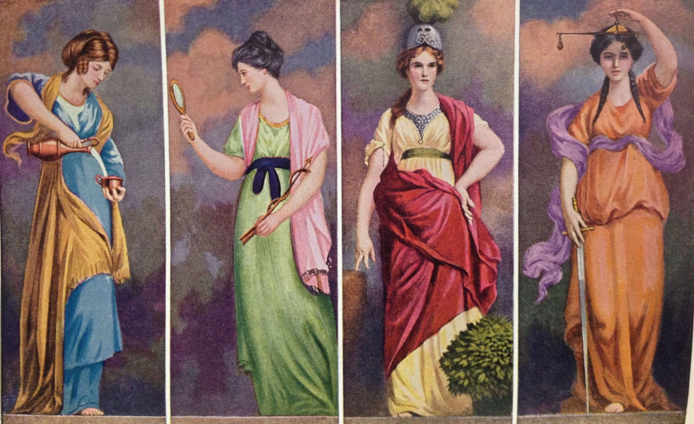

A educação em Platão
Provavelmente você já ouviu falar em Platão, um dos maiores filósofos da Antiguidade, discípulo de Sócrates e mestre de Aristóteles. Mas talvez você não saiba que a educação, ou paideía, ocupa um papel central em sua filosofia. Acompanhe este artigo para compreender como Platão via a formação do ser humano e o papel da educação na construção de uma cidade justa.

Paideía
Platão herdou a missão ética de Sócrates, e a luta cuja finalidade é a virtude se trava através da παιδεία – da educação e da cultura como um todo –, de sua transformação. A república é a sua obra central, na qual desenvolve a πολιτεία-paradigma, estabelecimento teórico do que racionalmente seria melhor para uma cidade, e que já constitui em si uma atitude prática de oposição à crise ética ateniense no século IV a.C. e às causas da maldade – que são sobretudo as educações poética e sofística, as grandes educadoras contra as quais a filosofia historicamente disputou. Sua principal tese, em oposição à irracionalidade da poesia e ao relativismo da sofística, é que a razão deve fundamentar toda cultura e educação, em vista da virtude e, consequentemente, do melhor para a cidade como um todo.
– Reis (2024), p. 8 (trecho da Introdução).
Etapas da educação
Desde a educação infantil e juvenil da música e da ginástica, até as etapas educacionais exclusivas ao guardião e ao governante, de ascensão da alma em direção ao ser, à verdade, e ao bem, para Platão a educação para a virtude deve ser a questão de maior preocupação e interesse político. Os governantes devem ter as melhores naturezas e receber a melhor educação, para que a filosofia reine na cidade e a torne em sua totalidade melhor e mais virtuosa.
– Reis (2024), p. 5 (trecho do Resumo).

As quatro virtudes cardeais
Com a “cidade já fundada” (427d), [os personagens do diálogo] passam a procurar nela a justiça. O método se baseia na assunção de que a cidade, se foi corretamente estabelecida (427e; ὀρθῶς [...] ᾤκισται), “participa (μετέχοι) [...] da virtude (ἀρετῆς)” (432b) pelas quatro virtudes cardeais; “é totalmente boa (τελέως ἀγαθὴν). [...] sábia (σοφή), corajosa (ἀνδρεία), temperante (σώφρων) e justa (δικαία)” (427e), e consiste na identificação das outras “virtudes” (432b; ἀρετῆς) na cidade, até, restando apenas a justiça, descobri-la.
A “sabedoria” (428b; σοφία) é a boa deliberação (428b; εὐβουλία), é a “ciência” (428b; ἐπιστήμη) pela qual se “delibera bem” (εὖ βουλεύονται)” (428b), e corresponde na cidade aos governantes.
A “coragem” (429a; ἀνδρεία) é “uma força” (430b) de preservação (429c; σωτηρίαν) da “opinião reta e legítima” (430b; δόξης ὀρθῆς τε καὶ νομίμου) “que se formou em nós, por efeito da lei, graças à educação (παιδείας), sobre as coisas a temer que existem, e a sua qualidade” (429c), e corresponde na cidade aos guerreiros. Interessante notar o acréscimo de que não é “nada legítima (νόμιμον) a opinião reta (ὀρθὴν δόξαν)” (430b) formada sem educação (430b; ἄνευ παιδείας), que enfatiza o papel e necessidade da educação como formadora dos preceitos estabelecidos por lei. Sócrates ainda afirma que conduzem um processo análogo ao de tingir a lã: como os tintureiros escolhem o branco e preparam a lã antes de mergulhá-la no tinto, primeiro escolheram (429e; ἐξελεγόμεθα) os soldados (429e; στρατιώτας), depois os educaram (429e; ἐπαιδεύομεν) “pela música e pela ginástica” (430a), para só então “imbuí-los das leis o melhor possível, [...] para que a sua opinião se tornasse indelével (δευσοποιὸς), quer sobre as coisas a temer, quer sobre as restantes, devido a terem tido uma natureza (φύσιν) e uma educação (τροφὴν) adequadas (ἐπιτηδείαν)” (430a). A coragem na cidade, portanto, serve para que o tinto das leis “não desbote com aqueles detergentes” (430a) – “o prazer [...], o desgosto, o temor e o desejo” (430a-b).
A “temperança” (430d; σωφροσύνη) “assemelha-se [...] a um acorde (ξυμφωνίᾳ) e a uma harmonia (ἁρμονίᾳ)” (430e), e “é uma espécie de ordenação (κόσμος), e ainda o domínio (ἐγκράτεια) de certos prazeres (ἡδονῶν) e desejos (ἐπιθυμιῶν), como quando dizem [...] ‘ser senhor de si (κρείττω δὴ αὑτοῦ)’” (430e), elogio que significa que o “melhor por natureza” (431a; βέλτιον φύσει) na alma “domina” (431a; ἐγκρατὲς) o “pior” (431a; χείρονος), e existe em todos os cidadãos e por toda a cidade (431e-432a). O contrário pode acontecer “devido a uma má educação ou companhia (τροφῆς κακῆς ἤ [...] ὁμιλίας)” (431a), expressa pela “censura” (431b; ψέγειν) à tal vergonha (431b; ὀνείδει) “escravo de si mesmo e libertino” (431b).
[...] Agora migrando a compreensão da justiça na cidade para a alma, “também cada um de nós, no qual cada uma das suas partes desempenha a sua tarefa, será justo e executará o que lhe cumpre” (441d-e). A diferença é que a justiça para a alma não “diz respeito à atividade externa do homem, mas à interna, aquilo que é verdadeiramente ele e o que lhe pertence” (443c-d).
– Reis (2024), p. 28-30.

A dialética
Mas então, de que “maneira” (521c; τρόπον) se originarão (521c; ἐγγενήσονται) esses filósofos? Passam a analisar (521c-531d) a educação preliminar que se deve ensinar como preparo para a dialética (536d; προπαιδείας, ἣν τῆς διαλεκτικῆς δεῖ προπαιδευθῆναι), os estudos (521c; μαθημάτων) ou artes que tem aquele “poder” (521d; δύναμιν) de fazer ascender até à luz (521c; ἀνάξει [...] εἰς φῶς) do ser (521c; ὄντος), de arrastar “a alma do que é mutável (γιγνομένου) para o que é essencial (ὄν)” (521d). Um requisito é que, antes de tudo, sejam matérias úteis aos “atletas guerreiros” (521d; ἀθλητὰς [...] πολέμου), já que o foram quando novos.
Sócrates começa a enumerar as matérias da “educação superior” dos guardiões. A primeira (522c-526c) é resumida como número e cálculo (522c; ἀριθμόν τε καὶ λογισμόν), ou “o cálculo e a aritmética” (525a; λογιστική τε καὶ ἀριθμητικὴ). [...]
– Reis (2024), p. 40.
A “dialética” (532a; διαλέγεσθαι) (531d-535a) não se serve dos “sentidos” (532a; αἰσθήσεων), mas só da “razão” (532a; λόγου), para “alcançar a essência (ἔστιν) de cada coisa” (532a), até apreender o bem em si pela intelecção em si (532b; αὐτὸ ὃ ἔστιν ἀγαθὸν αὐτῇ νοήσει λάβῃ), aos “limites do inteligível” (532b; νοητοῦ τέλει). A “capacidade dialética (διαλέγεσθαι δύναμις) é a única (μόνη)” (533a) que pode revelar o “verdadeiro” (533a; ἀληθές) bem; o “método da dialética (διαλεκτικὴ μέθοδος) é o único (μόνη) que procede, por meio da refutação de hipóteses (ὑποθέσεις ἀναιροῦσα), a caminho do próprio (αὐτὴν) princípio (ἀρχήν), a fim de tornar seguros (βεβαιώσηται) os seus resultados” (533c). O “dialético” (534b; διαλεκτικὸν) é capaz de delimitar pela razão (διορίσασθαι τῷ λόγῳ) “a ideia do bem (ἀγαθοῦ ἰδέαν), separando-a (ἀφελὼν) de todas as outras” (534b-c); e só quem “conhece o bem em si” (534c) conhece qualquer outro bem. A “dialética” (534e; διαλεκτικὴ) é a nutrição e educação (534d; τρέφεις τε καὶ παιδεύεις) “pela qual se tornarão capazes de interrogar e de responder da maneira mais sábia” (534d), a “cúpula” (534e; θριγκὸς) e o fim (534e; τέλος) dos ensinos, portanto deve ser estabelecida como lei para as crianças que terão de ser governantes nas cidades e senhores das maiores questões (534d; ἄρχοντας ἐν τῇ πόλει κυρίους τῶν μεγίστων εἶναι).
– Reis (2024), p. 42-43.
Referência:
REIS, Marcelo Henrique Rosa. Paideía na obra A República de Platão. Orientador: Maria Dulce Reis. 2024. TCC (Graduação) - Curso de Filosofia, PUC Minas, Belo Horizonte, 2024. Disponível em: https://bib.pucminas.br/pergamumweb/download/3426B977-E35D-4743-A8CF-3574D325AF77.pdf. Acesso em: 13 out. 2025.